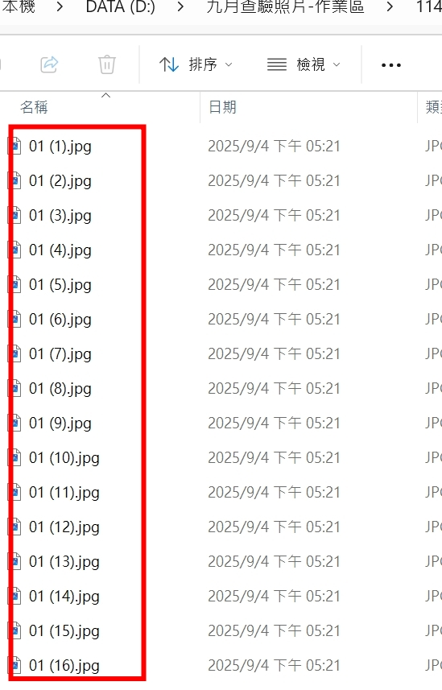
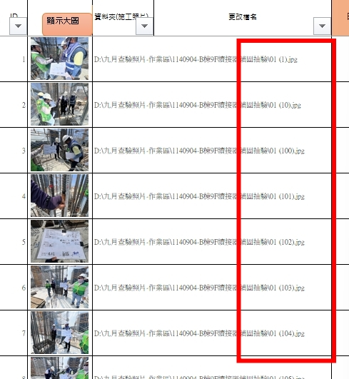
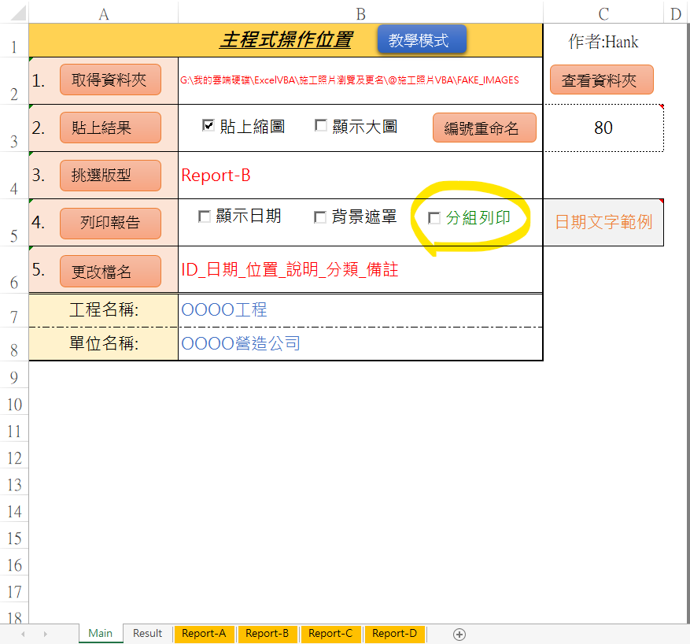
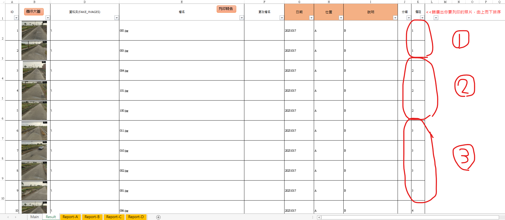
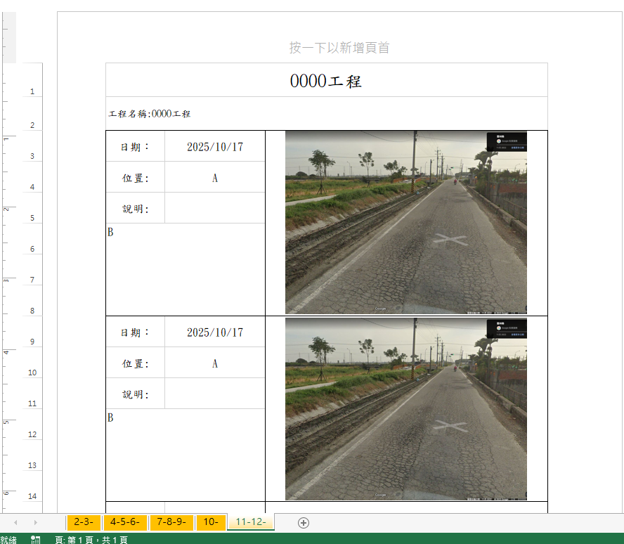

前言
自從施工照片VBA開始實際投入報表製作過程後，陸陸續續有些使用回饋心得，其中有相當多的常見問題我想要撰寫於這篇文章中，讓各位能有個來源解除這些疑惑，畢竟工具很難完美，肯定是需要經過大量的操作，才會讓他變得更好!
如果使用上還有些什麼更好的建議，請透過左側聯繫我~
一、施工照片長寬比不按正確比例放大導致變形。
解決方法
經查為以下該段程式碼的原因，可以將這段程式碼蓋掉本來的內容就好。
1 2 3 4 5 6 7 8 9 10 11 12 13 14 15 16 17 18 19 20 21 22 23 24 25 26 27 28 29 30 31 32 33 34 35 36 37 38 39 40 41 42 43 44 45 46 47 48 49 50 51 52 53 Sub PastePhoto_giveRng(ByVal rng As Object , ByVal photo_path As String , ByVal checkday As String )With shtReport If rng.MergeCells Then myMergeArea = rng.MergeArea dy = UBound(myMergeArea, 1 ) dx = UBound(myMergeArea, 2 ) End If Set LastRng = .Cells(rng.Row + dy - 1 , rng.Column + dx - 1 ).Offset(1 , 1 ) X0 = rng.Left Y0 = rng.Top X1 = LastRng.Left Y1 = LastRng.Top targetWidth = X1 - X0 - 4 targetHeight = Y1 - Y0 - 4 Set pic = .Shapes.AddPicture(photo_path, True , True , X0 + 2 , Y0 + 2 , -1 , -1 ) pic.LockAspectRatio = msoTrue If (pic.Width / pic.Height) > (targetWidth / targetHeight) Then pic.Width = targetWidth Else pic.Height = targetHeight End If pic.Left = X0 + ((X1 - X0) - pic.Width) / 2 Call AddText(X1 - 100 , Y1 - 30 , 25 , 40 , tranDate(checkday), 3 ) End With End Sub
二、資料夾照片順序與檔案順序不一致
從LINE相簿下載的照片名稱雖然上面有順序，但是匯入施工照片VBA之後卻不會按照原本的順序進行排列?

Fig1.
原本的順序是(1).(2).(3)...(10)...(100)...

Fig2.
當引入之後會變成(1).(10).(100)...
發生原因
對於數字而言，1.2.3...10.11...100.101...這樣排序會正常運作，但是在excel中，名稱所有的數字都會變成文字 來處理，所以1的後面是10，再來是100
解決方案
把原本是數字的部分通通變成3碼，001.002.003.....010.011.....100，他就會照這樣排序上去了。
可想而知，如果各位要這樣一筆一筆手動修改也是很累人的一件事，所以此時就可以寫個VBA工具將檔案名稱做關鍵字拆分，取出最後的編號部分，用格式化選項作成三碼的數字，重新併回去產製新的照片名稱。
一般來說，LINE是存放檔案的最大宗，從相簿下載回電腦的名稱為LINE_ALBUN_相簿名稱_相簿日期_流水號.jpg ，此時就能透過這個方式先將流水號拆出來，再將流水號修改為固定三位數的流水號。
1 2 3 4 5 6 7 8 9 10 11 12 13 14 15 16 17 18 19 20 21 22 23 24 25 26 27 28 29 30 31 32 33 34 35 36 37 38 39 40 41 42 43 44 Sub renameFiles() Dim main_path As String Dim fileName As String Dim newFileName As String Dim pos As Long Dim posDot As Long Dim numPart As String Dim ext As String ' 取得資料夾路徑 main_path = Sheets("Main").Range("B2").Value If Right(main_path, 1) <> "\" Then main_path = main_path & "\" End If fileName = Dir(main_path & "*.*") Do While fileName <> "" pos = InStrRev(fileName, "_") ' 找到最後一個 "_" posDot = InStrRev(fileName, ".") ' 找到最後一個 "." If pos > 0 And posDot > pos Then numPart = mid(fileName, pos + 1, posDot - pos - 1) If IsNumeric(numPart) Then numPart = Format(CLng(numPart), "000") newFileName = Left(fileName, pos) & numPart & mid(fileName, posDot) Name main_path & fileName As main_path & newFileName Debug.Print "Rename: " & fileName & " -> " & newFileName End If End If fileName = Dir Loop MsgBox "重新編號完成!", vbInformation End Sub
三、列印報表時出現不正確的檔案名稱或號碼
Fig3. 資料夾的路徑，含有古字
發生原因
Excel
VBA在描述檔案過程會用絕對路徑來進行，當絕對路徑上任一個文字出現特殊符號就會跳該錯誤訊息。
即便用戶在電腦上所見名稱都正常顯示，但是當判讀路徑名稱含有古字 ，Excel會自動轉譯成?，此時就會變成路徑所禁止的特殊符號，導致錯誤發生。
解決方法
不要執著於一定要把古字打出來，當你發現電腦不能打出這個文字必須要去網路作複製貼上的時候，就用別的字來代替，輸出報表後再來修改。
四、列印報表時如何讓前中後照片剛好放置於同一張報表
發生原因
目前的版本在列印的過程，會由使用者先針對工作表("Result") 先進行排序及篩選，處理完後顯示於工作表上的內容會由上而下依序列印，如果指定的報表範本為3張照片一頁，則列印過程中每三張就會自動換頁。
解決方法
承問題一，需要先將照片順序於資料夾中確認完畢，爾後再透過分組列印的方式，強制將前中後照片放置於同一張報表中，分組列印的過程可以在工作表("Result")中以備註或者新增一欄位作為分組列印的依據，列印過程會將相同的內容分到同一組別，達成前中後照片於同一張報表的目的。
於工作表("Main")中勾選分組列印
於工作表("Result")中設定某一欄作為分組欄位(同一張報表設定為同一個編號)
列印報表時選擇該欄作為分組依據

Fig4. 分組列印的畫面

Fig5. 設定某一欄作為分組欄位

Fig6.
分組列印的成果，原本應該是2-3-4，因為分組後變成2-3-，就換到下一頁了!
五、施工前中後照片順序無法正確對應
發生原因
貼上照片的過程，他會直接由檔案名稱作為排序的依據，因此即便檔案名稱有註明OOO_施工前、OOO_施工中、OOO_施工後，他仍然會被OOO所影響他的先後順序。
解決方法
以流水號ID作為檔案名稱的前綴文字，1_OOO_施工前、2_OOO_施工中、3_OOO_施工後，每次在匯入的時候如果發現順序有異常，再針對ID做排序一次即可回歸正確順序。
相關連結
施工照片VBA-實作流程